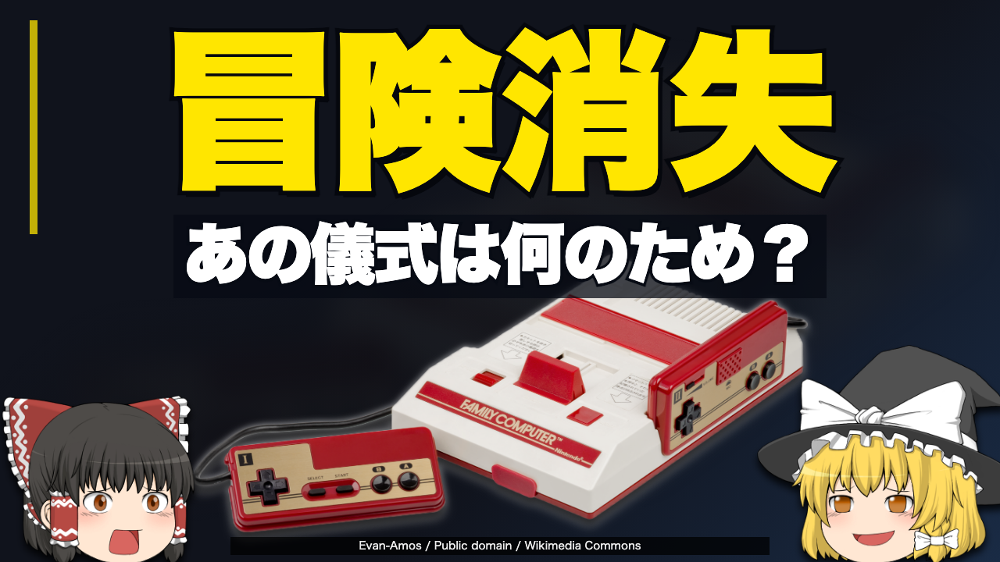

F1失いたくなかった自分の冒険今回の第一候補

ファミコンは僕らの冒険をどう守っていたのか【ゆっくり解説】
「せっかく進めたのに」という悔しさを思い出し、あの手間が何を守っていたか確かめたくなる。
動画で返すもの
続きを紙・ディスク・カセットへ残す違いを見たうえで、リセットを押して切る操作が守ったものへ戻る。
根拠と、言い過ぎない範囲
リセット忘れが消失の唯一の原因だった、押さないと必ず消える、とは言わない。
任天堂の資料：資料2・資料4・資料5・資料6
写真：Evan-Amos / Public domain / Wikimedia Commons。切り抜き・拡縮・文字合成あり。立ち絵：きつね（仮）。